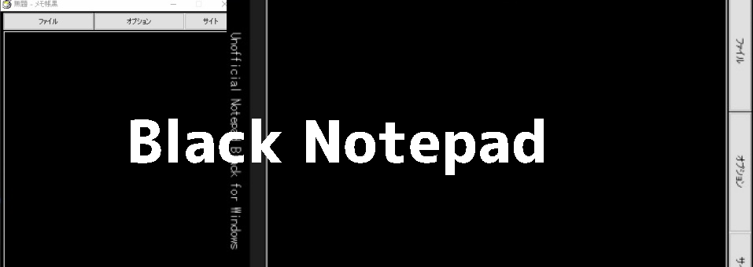

ブラック版メモ帳とは、Windows標準の「メモ帳」
とは違い、非公式の黒いメモ帳です。
機能は基本的なものしかなく、Windows標準のメモ帳よりは性能は劣ります。

標準のメモ帳を黒くするには、Windowsのテーマの「反転」を
使う必要があり、それを使うとメモ帳以外も色が反転してしまうのです。
そうなったら元から黒い部分も白くなってしまいます。
そこで、このブラック版メモ帳に乗り換えるというわけです。
ダウンロードはコチラ↓
https://drive.google.com/open?id=1J-Lc5oQHc36GwnexZVVu0vUMPbzuWDx4
ダウンロード先はGoogleDriveとなっております